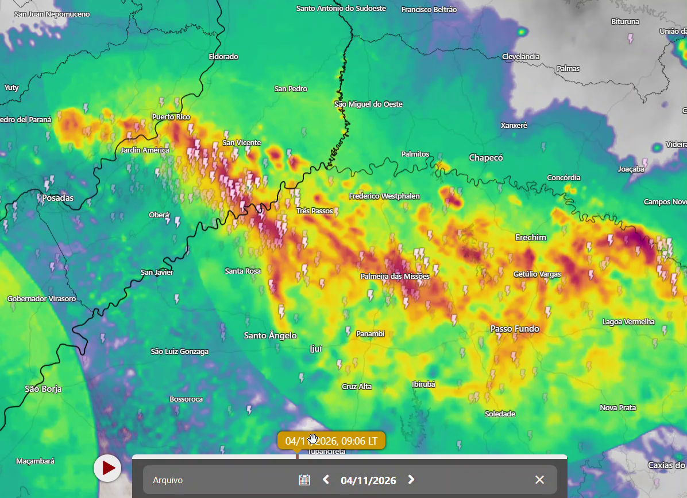
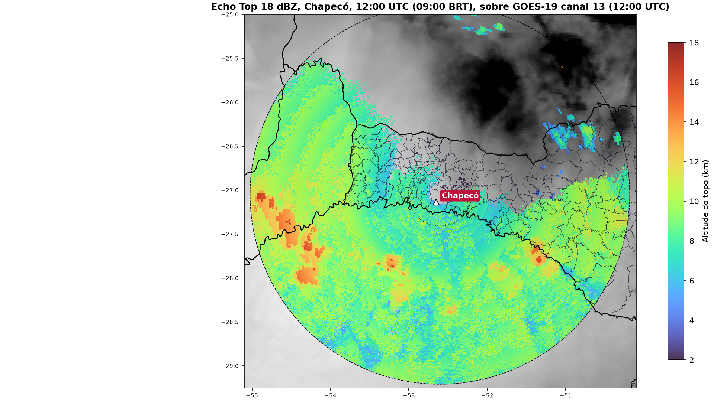

Visão geral do evento
Evolução da linha em arco sobre o Oeste de SC e trajetória dos núcleos, a partir dos volumes brutos do radar banda S de Chapecó e dos MaxCAPPI do DECEA.
Evolução em seis horários
Quadros do radar em seis horários da passagem da linha.
radar/plotar_radar_chapeco.pyTrajetória dos núcleos
Refletividade máxima acumulada e trajetória dos núcleos, 09:00–12:00 local.
radar/plotar_radar_chapeco.pyBairros com danos e trilha do radar
Envelope dos bairros com danos relatados, trilha do núcleo e hidrografia. A Defesa Civil divulgou bairros, não pontos de dano. Hidrografia e bairros © colaboradores do OpenStreetMap.
radar/mapa_danos_trilha.pyAnimações
Laços de quadros e vídeos. Use o controle deslizante para parar num horário.
Gravação do radar, 09:16–11:45 local
Gravação de tela do radar durante a passagem da linha.

Quadros da gravação
Sete quadros extraídos da gravação do radar.
Campos polarimétricos, 10:30 local (13:30 UTC), 0,5°
Varredura mais baixa do radar banda S de Chapecó em torno do Aeroporto. O feixe passa ~280 m acima do chão sobre o aeroporto.
Refletividade (Z)
Z a 0,5°, 13:30 UTC.
radar/figuras_video.pyVelocidade radial (V)
V a 0,5°, 13:30 UTC.
radar/figuras_video.pyCoeficiente de correlação (CC)
CC a 0,5°, 13:30 UTC. O CC anômalo sobre o aeroporto é a principal pendência.
radar/figuras_video.pyRefletividade diferencial (ZDR)
ZDR a 0,5°, 13:30 UTC.
radar/figuras_video.pyMapa da trilha
Base usada para animar a trilha do núcleo no vídeo.
radar/figuras_video.pyCapa do vídeo v2
Quadro de abertura do vídeo.
Estrutura vertical e hidrometeoros
Alturas acima do radar (822 m). A fusão, estimada pelo próprio radar depois da passagem, fica a ~3,0–3,3 km acima dele.
Corte vertical seguindo o núcleo
Z, ZDR, CC, KDP e classes, de 10:12 a 10:42 local.
radar/corte_vertical_hidrometeoros.pyColuna e hidrometeoros
Nível de fusão (QVP), viés de ZDR e coluna seguindo o núcleo.
radar/corte_vertical_hidrometeoros.pyZ máximo por altura e horário
Só com CC ≥ 0,90: a coluna é de chuva intensa.
radar/figuras_video_microexplosao.pyAeroporto, 13:30 UTC, por elevação
O núcleo de CC baixo nas elevações do volume de 13:30 UTC.
radar/analise_rotacao.pyEco em gancho e BWER
Busca de BWER, eco em gancho e granizo, 13:00–14:00 UTC, em grade de 1 km.
radar/analise_bwer_gancho_granizo.pyVento, cisalhamento e rotação
Com radar único e a fronteira quase radial, rotação e cisalhamento linear dão o mesmo sinal.
Vento atrás da linha, 10:30 local
A componente em direção ao radar cai de 27 m/s a 130 m para 18 m/s a 810 m. Uma única varredura.
radar/figuras_video_microexplosao.pyCisalhamento em 2 km
V e cisalhamento sem gates dobrados: núcleo contra outros discos.
radar/figuras_video_microexplosao.pyVelocidade radial em torno do Aeroporto
13:12–13:48 UTC, com aliasing corrigido por regiões contíguas.
radar/analise_velocidade.pyResumo da análise de rotação
Descida de precipitação, velocidade relativa ao núcleo e largura espectral.
radar/analise_rotacao_final.pyEvolução da rotação
Cisalhamento seguindo o núcleo de CC baixo ao longo dos volumes.
radar/analise_rotacao.pyPerfil vertical da rotação
As 14 elevações, seguindo o núcleo com o movimento ajustado.
radar/analise_rotacao.pyA rotação desceu?
Maior cisalhamento em arco de 2 km perto da trilha, todas as elevações, 13:06–13:36 UTC.
radar/analise_descida.pyTopo do eco e radar sobre satélite
Echo Top e echomax do radar de Chapecó sobre o canal 13 do GOES-19, 12–15 UTC. Perto do radar o topo fica truncado e é só um limite inferior.
Echo Top, 13:30 UTC
Topo a 18 dBZ (eco) e 40 dBZ (núcleo convectivo) sobre o GOES-19.
satelite/compor_echotop_satelite.pyEcho Top em seis horários
Painel de Echo Top sobre o canal 13.
satelite/compor_echotop_satelite.py
Echo Top, quadro a quadro
Um quadro por volume do radar, a cada 6 min.
satelite/compor_echotop_satelite.pyEchomax e satélite, 13:30 UTC
Satélite, echomax e composição no volume de 13:30 UTC.
satelite/compor_radar_satelite.pyComposição em seis horários
Echomax sobre o canal 13 do GOES-19.
satelite/compor_radar_satelite.pyAnimação do Echo Top
Echo Top sobre o GOES-19, 12–15 UTC.
satelite/compor_echotop_satelite.pyScripts
Código que gera as figuras. Os volumes brutos (.vol) não estão no repositório.
radar/analise_bwer_gancho_granizo.pyradar/analise_descida.pyradar/analise_nucleo.pyradar/analise_rotacao.pyradar/analise_rotacao_checagens.pyradar/analise_rotacao_final.pyradar/analise_velocidade.pyradar/baixar_redemet_chapeco.pyradar/corte_vertical_complemento.pyradar/corte_vertical_hidrometeoros.pyradar/figuras_video.pyradar/figuras_video_1330.pyradar/figuras_video_microexplosao.pyradar/leitor_vol_chapeco.pyradar/mapa_danos_trilha.pyradar/painel_redemet_georref.pyradar/plotar_radar_chapeco.pyradar/teste_microexplosao.pyradar/teste_microexplosao_2.pyradar/teste_reconciliacao.pyradar/RELATORIO_ROTACAO.mdsatelite/compor_echotop_satelite.pysatelite/compor_radar_satelite.pysatelite/echotop_trilha.pybaixar_recentes.pygerar_pagina.py